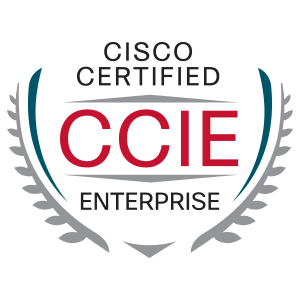
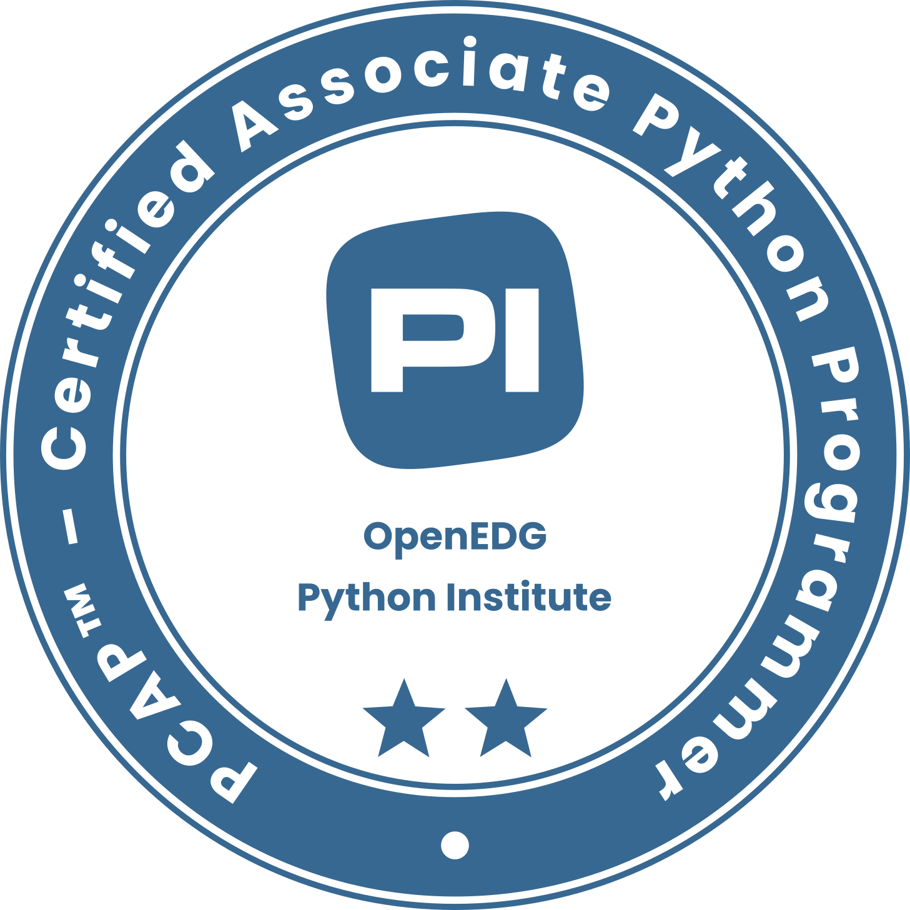

Core Expertise & Certifications
CCDE Written
CCIE R&S (#63364)
JNCIE-Data Center (#455)
PCAP – Certified Associate Python Programmer


Network Automation
Python, Ansible, CI/CD pipeline, Shell, REST API, AWX, VBA, Scripting for Cisco/Juniper/Versa/Aruba
Technology
OSPF, IS-IS, BGP, MPLS, L2VPN/L3VPN, VXLAN, EVPN, Layer 2/3 technologies, Segment Routing
SD-WAN & Cloud
Versa SD-WAN, Cisco SD-WAN, Azure, AWS
Tools & Virtualization
VSCode, Postman, IPFABRIC, Logic Monitor, Zabbix, Docker Container
Vendor Expertise
Cisco, Juniper (M/T/MX/PTX), Versa, Nokia, Aruba
Future Focus
Currently up-skilling on AI/ML and Cloud Technologies
Career Timeline
Apr 2022 - Present
Network Automation Engineer - British Petroleum (BP)
- L3 Engineer: working as L3 engineer to support the escalated issues
- Technology Shift: Currently working for transforming legacy infrastructure to SDWAN including End to end planning & implementation of all BP Sites.
- SD-WAN Automation (Versa): Led the development and implementation of Versa Automation using REST API, Python, and AWX for zero-touch provisioning, Onboarding devices, committing templates, CI/CD for maintaining the device config and template config in SYNC
- Aruba Automation: Implemented Various automations for Aruba L2 and L3 Devices which includes prechecks, postchecks, backups, version control
- Automation for SOC: Implemented Versa Automation for SOC team to Isolate the SDWAN site when any of the site will be compromised (under attack)
- L3 & 5G Integration: Worked on architecture of VXLAN implementation on Aruba for Celona 5G LTE
- Legacy Migration: Designed and executed Ansible-based automation to migrate configurations across 1000+ legacy devices.
Apr 2020 – Mar 2022
Technical Support Engineer 3 - Juniper Networks
- Premium Customer Support: Provided advanced L3 technical support for Juniper’s flagship Routing Platforms (M, T, MX, PTX series).
- Routing Protocol Expertise: Mastered complex BGP, MPLS (L2VPN/L3VPN), and IS-IS scenarios.
- Resolved complicated hardware and software issues, replicated customer environments and network problems in the lab.
- Supported planned maintenance windows, network/service provisioning for large ISPs
- Helped customer in Isolating product issue at a hardware Chipset level that potentially impacts the control, Management, or forwarding plane traffic
- Isolated degradation and Software issues with JUNOS Major Release
Aug 2015 – Mar 2020
Technology Analyst - Infosys Ltd.
- Automation Tooling: Developed internal automation tools using Python to streamline day-to-day network operations.
- Service Delivery: Involved in end-to-end service migration projects (L3VPN, L2VPN) for a major US Tier-I ISP.
- Performed site relocation, new installation, site bandwidth upgrade activities.
- Monitored and configured MPLS and Internet circuits which include requirement analysis, failure management, troubleshooting of network issues.
- Performed audits of MOP (Method of Procedure), network configuration of projects to ensure quality of work is maintained.
- Developed Auto Allocation Pilot Tool that reduced manual intervention to allocate daily pending work orders to users automatically.
2011 - 2015
B-Tech (Electronics and Telecommunications) - VIT Pune
Successfully completed Bachelor of Technology degree, with a final year project focusing on Automatic Face recognition using k-NN Algorithms used in ML.
GET IN TOUCH
Let's Work Together
PRASAD D SHIVANE
Engineer by Design, Learner by Choice — Automating with AI